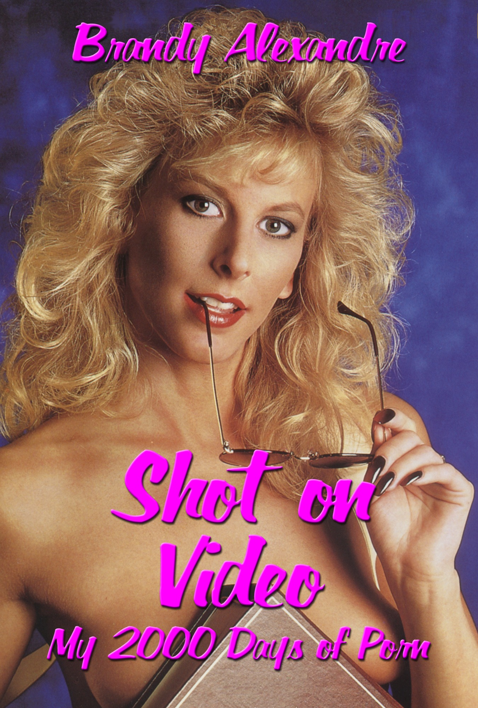

Shot on Video
My 2,000 Days of Porn
“A peek behind the neon curtain into the Golden Age and VHS boom.”
About the memoir
Before she wrote it down, she lived it.
When Brandy Alexandre got into the adult movie business, she had to fight for every part and stand her ground or risk becoming a footnote… or worse, a question mark.
With the precision of a journalist and the resolve of someone with nothing left to lose, Brandy recounts 2,000 days inside the era of the adult movie industry the 1980s built. Structured around actual fan questions and layered with anecdotes, Shot on Video is the story of a B-lister who wore every hat in an industry dominated by men. It is funny, brutal, and unlike any memoir you’ve read before.
From the manuscript
The first day to the last, with chaos in between.
It felt like an out-of-body experience—my inner voice flipping between an exhilarated “I can’t believe I’m actually doing this!” and an anxious “What in the hell am I doing?” It was like Clark Griswold in Vacation before diving into the pool with Christy Brinkley: This is crazy! This is crazy!
— Chapter “How did you get in?”: The Debutante - Day One
One strange guy paid for six minutes and then proceeded to dance around, showing off his leopard-spotted bikinis. Looking back, it reminds me of the scene in Armageddon where Bear, played by Michael Clarke Duncan, dances on the exam room table in his tiger-striped undies.
— Chapter “Did you ever hang out with fans?”: Personal appearances
Beyond the emotional weight, I had a far more practical problem: a résumé gap the width of the Grand Canyon. How do I explain it to prospective employers? “I spent the last several years doing porn—right up until I was blacklisted. But I’m proficient in MS Office and type 55 words per minute.”
— Chapter “Why did you get out?”: Moving On
For agents & publishers
The manuscript is complete.
Shot on Video is a complete memoir manuscript available upon request to established agents and publishers. Brandy Alexandre is a first-time author with a singular story and a distinct voice. She is represented by no one—yet.
Request the Full Manuscript